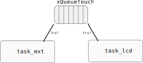
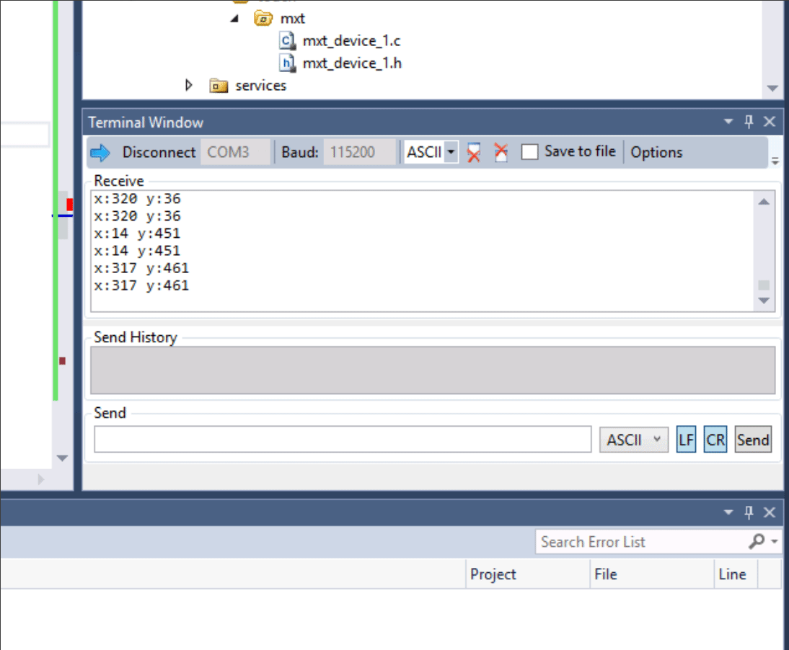

RTOS - LCD
Nesse lab iremos trabalhar com o uso de um sistema operacional de tempo real (RTOS) para gerenciar o LCD max Touch, o forte desse lab será a linguagem C e como estruturar um firmware.
Preencher ao finalizar o lab
LAB
| LAB |
|---|
Labs/RTOS-LCD-maxTouch-Switch |
- Executar demo do LCD com RTOS
- Trabalha com dados de touch e LCD
Início
LCD max Touch
Plugue o LCD max Touch no EXT2.
Código exemplo
- Copie o código exemplo
SAME70-examples/Screens/RTOS-LCD-maxTouch-Switch-Toggle/para a pasta da entrega do seu repositórioLabs/RTOS-LCD-maxTouch-Switch- Vamos modificar esse código exemplo.
Terminal
Esse exemplo faz uso da comunicação UART para debug de código (via printf), para acessar o terminal no atmel estúdio clique em:
 View Terminal Window
View Terminal Window
Configure o terminal para a porta que (COM) correta (verificar no windiows) e para operar com um BaudRate de 115200.
Entendendo o exemplo
Vamos entender o exemplo e como ele funciona! Nesse projeto temos duas tasks:
task_mxt: Gerencia o touch do LCDtask_lcd: Gerencia a escrita de informação no LCD
Essas tarefas se comunicam por uma fila chamada: xQueueTouch, onde a task mxt envia dados relativos ao touch (x, y) e a tarefa lcd coleta esses dados e processa o evento.
Os dados da fila são um struct do tipo:
typedef struct {
uint x;
uint y;
} touchData;
O diagrama a seguir ilustra o firmware:

Execute
- Programe o uC com o firmware exemplo
- Analise o resultado
- Entenda o código
Modificando
Vamos modificar esse código, ele não foi implementando de uma forma que suporta expansão.
struct
Vamos organiza os botões em uma struct, para ficar mais fácil de criarmos novos botões, ou modificar os que já existem. Para isso, crie uma struct como a seguir:
typedef struct {
uint32_t width; // largura (px)
uint32_t height; // altura (px)
uint32_t colorOn; // cor do botão acionado
uint32_t colorOff; // cor do botão desligado
uint32_t x; // posicao x
uint32_t y; // posicao y
} t_but;
Note
Estamos assumindo que o botão é um retângulo.
Na task_lcd vamos criar o primeiro botão (but0):
t_but but0= {.width = 120, .height = 75,
.colorOn = COLOR_TOMATO, .colorOff = COLOR_BLACK,
.x = ILI9488_LCD_WIDTH/2, .y = 40 };
Note
Esses dados foram copiados da configuração dos botões já existentes no código.
draw_button_new
E agora vamos criar uma função que recebe o tipo t_but e desenha o botão na tela:
void draw_button_new(t_but but, int status){
uint32_t color;
if(status)
color = but.colorOn;
else
color = but.colorOff;
ili9488_set_foreground_color(COLOR_CONVERT(color));
ili9488_draw_filled_rectangle(but.x-but.width/2, but.y-but.height/2,
but.x+but.width/2, but.y+but.height/2);
}
Vamos editar a task_lcd para chamar essa função recém criada com o but0, ela deve ficar:
void task_lcd(void){
xQueueTouch = xQueueCreate( 10, sizeof( touchData ) );
configure_lcd();
draw_screen();
font_draw_text(&digital52, "DEMO - BUT", 0, 0, 1);
t_but but0 = {.width = 120, .height = 75,
.colorOn = COLOR_TOMATO, .colorOff = COLOR_BLACK,
.x = ILI9488_LCD_WIDTH/2, .y = 40 };
uint8_t but0_status = 1;
draw_button_new(but0, but0_status);
// struct local para armazenar msg enviada pela task do mxt
touchData touch;
while (true) {
if (xQueueReceive( xQueueTouch, &(touch), ( TickType_t ) 500 / portTICK_PERIOD_MS)) {
//update_screen(touch.x, touch.y);
but0_status = ! but0_status;
draw_button_new(but0, but0_status);
printf("x:%d y:%d\n", touch.x, touch.y);
}
}
}
Execute
- Faça as alterações no código
- crie a struct
t_but - crie o
but0 - crie a função
draw_button_new - modifique a tarefa
task_lcd - Compile e programe o código
- Verifique a funcionalidade do programa
- toque na tela, o botão deve mudar!
- crie a struct
melhorando a draw_button_new
Já que possuímos uma struct que guarda a informação do botão, porque não guardar nela o status (but0_status)? Vamos fazer, modificar a t_but inserindo um campo a mais uint8_t status e modificar a função que desenha o botão para não termos mais que passar o argumento on.
void draw_button_new(t_but but){}
Execute
- Faça as alterações no código
- modifique
t_but - modifique a função
draw_button_new() - modifique a
task_lcdpara usar esse novo campo
- modifique
- Programe e teste
Novos botões
Vamos criar dois novos botões (but1, but2), com as seguintes propriedades:
-
but1:- colorOn: Escolher uma
- posição y
140
-
but2:- colorOn: Escolher uma
- posição y
240
o que não foi definido, copiar do botão 0 (
but0)
Agora exiba os novos botões, e faça com que eles mudem o status quando toque na região deles na tela!
Execute
- Faça as alterações no código
- crie
but1ebut2 - exiba os botões e faça eles mudarem o status
- crie
- Programe e teste
Detectando botão
Vamos agora criar uma função que detecta qual botão foi pressionado, para isso, vamos criar um vetor de structs (cada index representa um botão) e passar para essa função o vetor e também o valor recebido pela fila do toque referente a x e y.
na
task_lcd
Para criar o vetor de structs:
t_but botoes[] = {but0, but1, but2};
Tip
Você tem no seu código algo como isso:
draw_button_new(but0);
draw_button_new(but1);
draw_button_new(but2);
Pode mudar para um for varrendo o nosso novo vetor botoes. O código vai ficar mais clean.
Com o vetor criado, vamos criar a função que processa o touch, ela será chamada de processa_touch e terá a seguinte implementação:
int process_touch(t_but botoes[], touchData touch, uint32_t n){
}
Essa função recebe o vetor de structs e também a posição na tela de onde ocorreu o toque (touch.x, touch.y). A função deve retornar (int) um valor (0, 1, 2, ...) que indica qual botão que foi pressionado ou -1, indicando que nenhum botão satisfez o toque.
né o tamanho do vetorbotoes.
Warning
A função tem que ser genérica, suportando quantidade diferentes de botões e configurações diferentes de botões!
- Não pode isso:

Tip
Abra o terminal uart do atmel, lá você consegue ver os dados do touch:

Com a função vamos agora alterar somente o status do botão que foi pressionado, para isso, vocês devem alterar o while(1) da função task_lcd, para chamar a process_touch. Uma sugestão de como implementar isso a seguir:
if (xQueueReceive( xQueueTouch, &(touch), ( TickType_t ) 500 / portTICK_PERIOD_MS)) {
int b = process_touch(botoes, touch);
if(b >= 0){
botoes[b].status = !botoes[b].status;
draw_button_new(botoes[b]);
}
printf("x:%d y:%d\n", touch.x, touch.y);
}
Execute
- Crie o vetor de botões
- Declare a função
process_touch - Implemente a função
process_touch - Programe e teste
- Só o botão que for tocado deve mudar de status
Tip
Chegou até aqui? Não esqueça de preencher o forms com a entrega!
Extras (C+)
- Adicione 2 novos botões!
Extras (B)
Que tal que para cada botão associar uma função de callback, toda vez que o botão for encontrado, a função de callback pode ser executada!
- Modificar struct
- Criar uma função de
callbackpor botão - Modificar inicialização associando essa função
- ponteiro de função
- Validar
Tip
Extras (A)
No lugar dos botões terem cor podemos fazer com que eles tenham uma imagem associada! Que tal fazer isso?